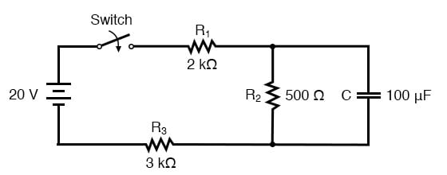
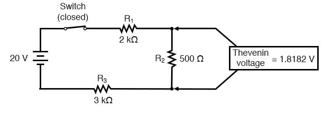
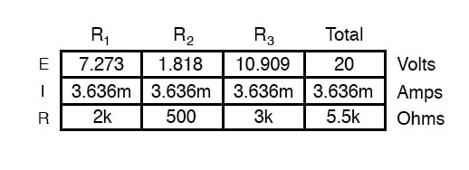
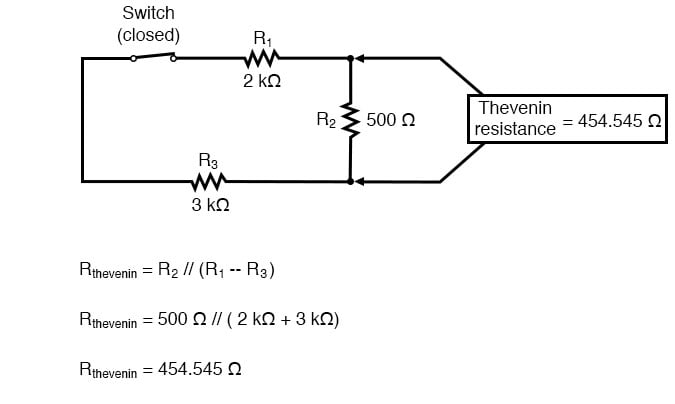
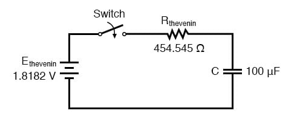
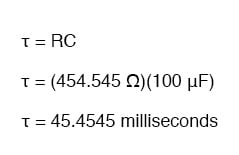
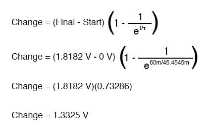

What do we do if we come across a circuit more complex than the simple series configurations we’ve seen so far? Take this circuit as an example:

The simple time constant formula (τ=RC) is based on a simple series resistance connected to the capacitor. For that matter, the time constant formula for an inductive circuit (τ=L/R) is also based on the assumption of simple series resistance. So, what can we do in a situation like this, where resistors are connected in a series-parallel fashion with the capacitor (or inductor)?
The answer comes from our studies in network analysis. Thevenin’s Theorem tells us that we can reduce any linear circuit to an equivalent of one voltage source, one series resistance, and a load component through a couple of simple steps. To apply Thevenin’s Theorem to our scenario here, we’ll regard the reactive component (in the above example circuit, the capacitor) as the load and remove it temporarily from the circuit to find the Thevenin voltage and Thevenin resistance.
Then, once we’ve determined the Thevenin equivalent circuit values, we’ll re-connect the capacitor and solve for values of voltage or current over time as we’ve been doing so far.
After identifying the capacitor as the “load,” we remove it from the circuit and solve for voltage across the load terminals (assuming, of course, that the switch is closed):


This step of the analysis tells us that the voltage across the load terminals (same as that across resistor R2) will be 1.8182 volts with no load connected. With a little reflection, it should be clear that this will be our final voltage across the capacitor, seeing as how a fully-charged capacitor acts like an open circuit, drawing zero current. We will use this voltage value for our Thevenin equivalent circuit source voltage.
Now, to solve for our Thevenin resistance, we need to eliminate all power sources in the original circuit and calculate resistance as seen from the load terminals:

Re-drawing our circuit as a Thevenin equivalent, we get this:

Our time constant for this circuit will be equal to the Thevenin resistance times the capacitance (τ=RC). With the above values, we calculate:

Now, we can solve for voltage across the capacitor directly with our universal time constant formula. Let’s calculate for a value of 60 milliseconds. Because this is a capacitive formula, we’ll set our calculations up for voltage:

Again, because our starting value for capacitor voltage was assumed to be zero, the actual voltage across the capacitor at 60 milliseconds is equal to the amount of voltage change from zero, or 1.3325 volts.
We could go a step further and demonstrate the equivalence of the Thevenin RC circuit and the original circuit through computer analysis. I will use the SPICE analysis program to demonstrate this:
Comparison RC analysis * first, the netlist for the original circuit: v1 1 0 dc 20 r1 1 2 2k r2 2 3 500 r3 3 0 3k c1 2 3 100u ic=0 * then, the netlist for the thevenin equivalent: v2 4 0 dc 1.818182 r4 4 5 454.545 c2 5 0 100u ic=0 * now, we analyze for a transient, sampling every .005 seconds * over a time period of .37 seconds total, printing a list of * values for voltage across the capacitor in the original * circuit (between modes 2 and 3) and across the capacitor in * the thevenin equivalent circuit (between nodes 5 and 0) .tran .005 0.37 uic .print tran v(2,3) v(5,0) .end
Which prints out as:
| time | v(2,3) | v(5) |
|---|---|---|
| 0.000E+00 | 4.803E-06 | 4.803E-06 |
| 5.000E-03 | 1.890E-01 | 1.890E-01 |
| 1.000E-02 | 3.580E-01 | 3.580E-01 |
| 1.500E-02 | 5.082E-01 | 5.082E-01 |
| 2.000E-02 | 6.442E-01 | 6.442E-01 |
| 2.500E-02 | 7.689E-01 | 7.689E-01 |
| 3.000E-02 | 8.772E-01 | 8.772E-01 |
| 3.500E-02 | 9.747E-01 | 9.747E-01 |
| 4.000E-02 | 1.064E+00 | 1.064E+00 |
| 4.500E-02 | 1.142E+00 | 1.142E+00 |
| 5.000E-02 | 1.212E+00 | 1.212E+00 |
| 5.500E-02 | 1.276E+00 | 1.276E+00 |
| 6.000E-02 | 1.333E+00 | 1.333E+00 |
| 6.500E-02 | 1.383E+00 | 1.383E+00 |
| 7.000E-02 | 1.429E+00 | 1.429E+00 |
| 7.500E-02 | 1.470E+00 | 1.470E+00 |
| 8.000E-02 | 1.505E+00 | 1.505E+00 |
| 8.500E-02 | 1.538E+00 | 1.538E+00 |
| 9.000E-02 | 1.568E+00 | 1.568E+00 |
| 9.500E-02 | 1.594E+00 | 1.594E+00 |
| 1.000E-01 | 1.617E+00 | 1.617E+00 |
| 1.050E-01 | 1.638E+00 | 1.638E+00 |
| 1.100E-01 | 1.657E+00 | 1.657E+00 |
| 1.150E-01 | 1.674E+00 | 1.674E+00 |
| 1.200E-01 | 1.689E+00 | 1.689E+00 |
| 1.250E-01 | 1.702E+00 | 1.702E+00 |
| 1.300E-01 | 1.714E+00 | 1.714E+00 |
| 1.350E-01 | 1.725E+00 | 1.725E+00 |
| 1.400E-01 | 1.735E+00 | 1.735E+00 |
| 1.450E-01 | 1.744E+00 | 1.744E+00 |
| 1.500E-01 | 1.752E+00 | 1.752E+00 |
| 1.550E-01 | 1.758E+00 | 1.758E+00 |
| 1.600E-01 | 1.765E+00 | 1.765E+00 |
| 1.650E-01 | 1.770E+00 | 1.770E+00 |
| 1.700E-01 | 1.775E+00 | 1.775E+00 |
| 1.750E-01 | 1.780E+00 | 1.780E+00 |
| 1.800E-01 | 1.784E+00 | 1.784E+00 |
| 1.850E-01 | 1.787E+00 | 1.787E+00 |
| 1.900E-01 | 1.791E+00 | 1.791E+00 |
| 1.950E-01 | 1.793E+00 | 1.793E+00 |
| 2.000E-01 | 1.796E+00 | 1.796E+00 |
| 2.050E-01 | 1.798E+00 | 1.798E+00 |
| 2.100E-01 | 1.800E+00 | 1.800E+00 |
| 2.150E-01 | 1.802E+00 | 1.802E+00 |
| 2.200E-01 | 1.804E+00 | 1.804E+00 |
| 2.250E-01 | 1.805E+00 | 1.805E+00 |
| 2.300E-01 | 1.807E+00 | 1.807E+00 |
| 2.350E-01 | 1.808E+00 | 1.808E+00 |
| 2.400E-01 | 1.809E+00 | 1.809E+00 |
| 2.450E-01 | 1.810E+00 | 1.810E+00 |
| 2.500E-01 | 1.811E+00 | 1.811E+00 |
| 2.550E-01 | 1.812E+00 | 1.812E+00 |
| 2.600E-01 | 1.812E+00 | 1.812E+00 |
| 2.650E-01 | 1.813E+00 | 1.813E+00 |
| 2.700E-01 | 1.813E+00 | 1.813E+00 |
| 2.750E-01 | 1.814E+00 | 1.814E+00 |
| 2.800E-01 | 1.814E+00 | 1.814E+00 |
| 2.850E-01 | 1.815E+00 | 1.815E+00 |
| 2.900E-01 | 1.815E+00 | 1.815E+00 |
| 2.950E-01 | 1.815E+00 | 1.815E+00 |
| 3.000E-01 | 1.816E+00 | 1.816E+00 |
| 3.050E-01 | 1.816E+00 | 1.816E+00 |
| 3.100E-01 | 1.816E+00 | 1.816E+00 |
| 3.150E-01 | 1.816E+00 | 1.816E+00 |
| 3.200E-01 | 1.817E+00 | 1.817E+00 |
| 3.250E-01 | 1.817E+00 | 1.817E+00 |
| 3.300E-01 | 1.817E+00 | 1.817E+00 |
| 3.350E-01 | 1.817E+00 | 1.817E+00 |
| 3.400E-01 | 1.817E+00 | 1.817E+00 |
| 3.450E-01 | 1.817E+00 | 1.817E+00 |
| 3.500E-01 | 1.817E+00 | 1.817E+00 |
| 3.500E-01 | 3.550E-01 | 3.550E-01 |
| 3.600E-01 | 1.818E+00 | 1.818E+00 |
| 3.650E-01 | 1.818E+00 | 1.818E+00 |
| 3.700E-01 | 1.818E+00 | 1.818E+00 |
At every step along the way of the analysis, the capacitors in the two circuits (original circuit versus Thevenin equivalent circuit) are at equal voltage, thus demonstrating the equivalence of the two circuits.
REVIEW: